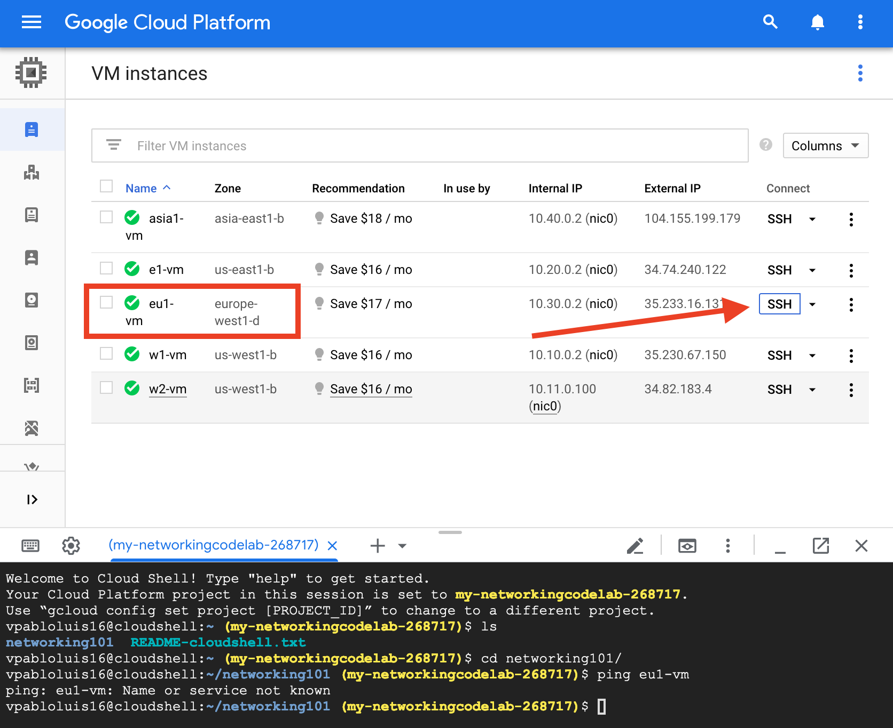
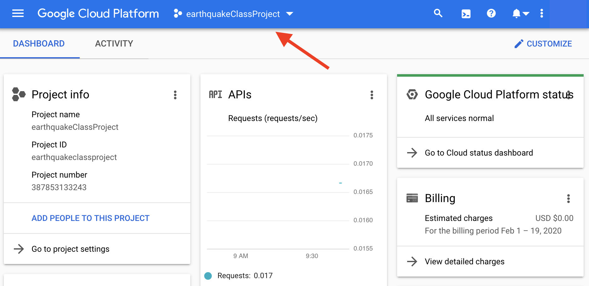

Google Cloud Platform
In this activity we learned more in depth how hosting a project works on Google's cloud service. During this activity we closely looked at Bash commands. Bash is a Unix shell and command language. It mostly used in Unix systems and commonly used by programmers when deploying apps and services. Most servers these days run on some Unix operating system, therefore, learning these basic commands will be helpful in our future.
For me these commands where no surprise since I had already dealt with them before. Being a curious tech geek I started working with a Raspberry Pi in order to create a self-hosted network to integrate all smart home devices via HomeKit (Apple's software framework for smart home devices).
In this GCP activity we learned a few things:
- SSH into instance using Unix bash commands
- How to install and use Git (source code version control)
- How to store data intro bucket
- How to update Python and the operating system
- How to execute a Python program
For this exercise we ingested real-time earthquake data published by the United States Geological Survey (USGS) and created maps of the world with points that represent earthquakes based on intensity. Also, we discussed the relationship of this exercise to what we had talked about in the class that by entering a command into the command line the systems processes what that means and returns data or action.